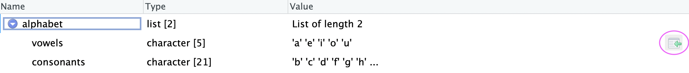
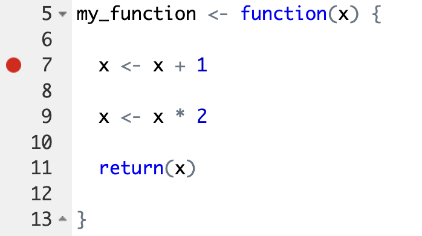
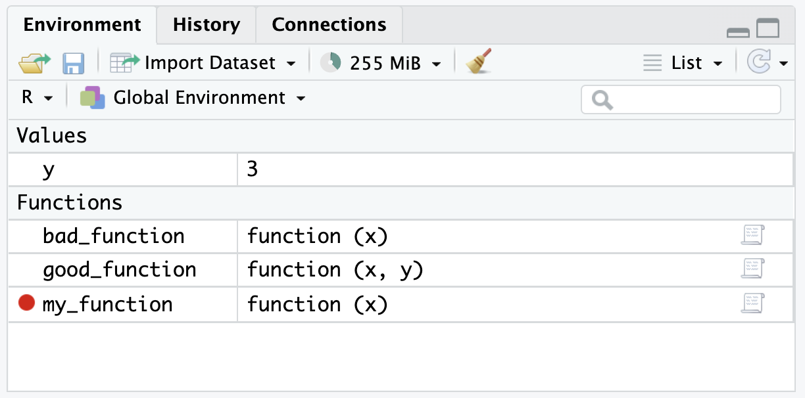
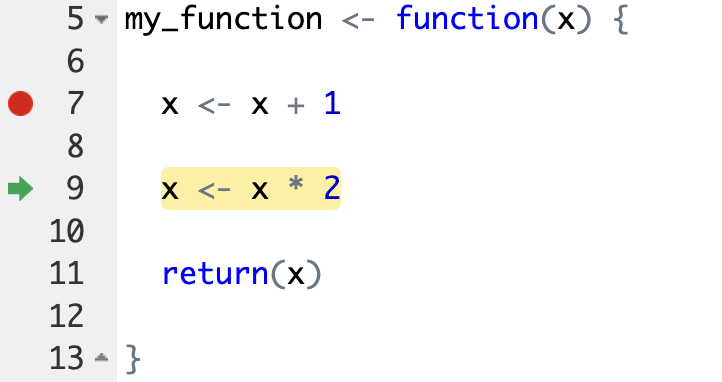
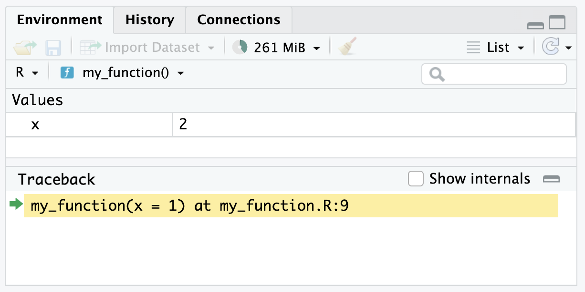
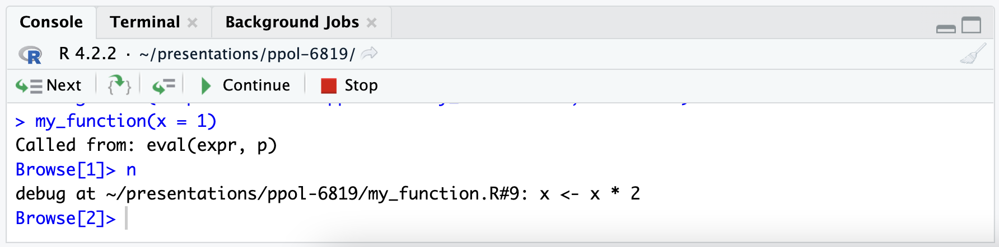

# A tibble: 1 × 11
name genus vore order conservation sleep_total sleep_rem sleep_cycle awake
<chr> <chr> <chr> <chr> <chr> <dbl> <dbl> <dbl> <dbl>
1 Cow Bos herbi Artiod… domesticated 4 0.7 0.667 20
# ℹ 2 more variables: brainwt <dbl>, bodywt <dbl>10 Advanced R Programming
Abstract
We’ve mostly focused on the tidyverse and data analysis. This section will dive into advanced R programming topics like custom functions, debugging, and iteration.
10.1 Review
10.1.1 Relational Data
We’ve almost exclusively used data frames up to this point. We leveraged relations within our data to pick subsets of the data with functions like filter().
Importantly, we almost never used indices or selected data by position, which can lead to errors if the underlying data change. An example of using indices and selecting data by position would be to pick data from row number 5 and column number 4. This idea of using the relations in data reduces the chances of making mistakes and leads to clearer code.
10.2 Programming
10.2.1 Selecting Data
There are other ways to subset data, which are important when working with objects other than data frames. We will focus on [], [[]], and $.
Atomic Vectors
Much of our work focuses on four of the six types of atomic vectors: logical, integer, double, and character. [] is useful for subsetting atomic vectors. Consider a vector with the first six letters of the alphabet:
We can use positive integers to subset to the first and fifth letters of the alphabet.
We can use negative integers to subset to the everything but the first and fifth letters of the alphabet.
We can use Booleans (trues and falses) to subset to the first and fifth letters of the alphabet.
This may seem silly, but we have many ways to create Booleans that we can then use to subset a vector.
[1] TRUE FALSE FALSE FALSE TRUE FALSE[1] "a" "e"We can use a character vector to subset a named vector.
We are able to select more than one element with [], which will not be true of [[]] and $. One thing to look out for is vector recycling. Let’s go back to letters_short, which is length six, but consider some indices of varying lengths.
[1] "a" "b" "c" "d" "e" "f"[1] "a" "c" "e"[1] "a" "c" "d" "f"
Caution
Wow, R recycles the Booleans. Six is divisible by 1, 2, and 3, so there are many ways to recycle the index to subset letters_short. This is dangerous and can quietly cause analtyic errors.
Lists
[[]] and $ are useful for subsetting lists. Both can be used to subset data frames, but I recommending avoiding this.
Unlike [], which returns multiple elements, [[]] and $ can only return a single element and [[]] and $ simplify objects by removing a layer of hierarchy.
[[]] can select an element by position or name, while $ can only select an element by name. Consider a list with the first six letters of the alphabet.
We can use [] to select the first or second element. In both cases, we get back a smaller list.
$vowels
[1] "a" "e"[1] "list"$consonants
[1] "b" "c" "d" "f"[1] "list"We can use [[]] to select the first or second element. Now, we get back a vector instead of a list. [[]] simplified the object by removing a level of hierarchy.
We can also use [[]] to select an object by name.
We can use $ to select either vector by name.
Referring to objects by name should make for code that is more robust to changing data.
Subsetting lists can be difficult. Fortunately, RStudio has a tool than can help. Click on a list in your global environment. Navigate to the far right and click the list button with a green arrow. This will generate code and add it to the Console.

Interestingly, this tool avoids $ and uses [[]] to pick the vector by name.
10.2.2 Control Flow
Loops are a fundamental programming tool for iteration; however, they are less common in R than in other programming languages. We encourage the map-reduce framework in the tidyverse’s purrr library which we introduce in Section 10.7. Even so, understanding the for loop and while loop is important because you will likely see them in other programmers’ R code, and they are extremely common in other programming languages.
For Loops
For loops have two main pieces: 1. a header and 2. a body. Headers define the number of iterations and potential inputs to the iteration. Bodies are iterated once per iteration. Here is a very simple example:
We can use headers several different ways. Like above, we may just want to repeat the values in the index.
[1] "apple"
[1] "banana"
[1] "cantelope"We can use the header as an index.
[1] "apple"
[1] "banana"
[1] "cantelope"We can leverage the index to use results from previous iterations.
We’ve now seen three different ways to use the header.
- Simply repeat the elements in the header (e.g. print
i). - Use the elements in the header as an index (e.g. select the \(i^{th}\) element).
- Use the header to reference past iterations (e.g.
i - 1)
Don’t grow vectors!
It is tempting to initialize a vector and then grow the vector with a for loop and c(). It is also tempting to initialize a data frame and then grow the data frame with bind_rows(). Because of R’s design, this is computationally very inefficient.
This is slow!:
It is essential to pre-allocate vectors and then fill them in. It is also easy to make mistakes when creating indices (e.g. 1:length(x) may end up as c(1, 0)). seq_along() is a helpful alternative to :. The following pre-allocates a vector and then uses the length of the vector to create an index.
[1] 0 0 0 0 0[1] 1 2 3 4 5Let’s consider a simple random walk with 100 steps. In this case, the person starts at location zero and random takes one step forward or one step back.
position <- vector(mode = "numeric", length = 100)
set.seed(20230530)
for (iter in 2:length(position)) {
position[iter] <- position[iter - 1] + sample(x = c(-1, 1), size = 1)
}
position [1] 0 -1 0 1 2 1 0 1 0 1 2 1 0 1 2 1 2 1 2 1 2 1 2 1 2
[26] 3 4 5 4 3 2 3 4 3 4 3 2 3 2 3 2 3 2 3 2 3 2 1 2 3
[51] 2 3 4 3 4 5 6 5 6 5 6 7 6 5 6 7 8 9 10 11 12 13 12 13 12
[76] 11 10 9 10 9 8 9 10 11 12 13 12 11 12 11 12 13 12 13 14 15 14 15 14 15While Loops
While loops are similar to for loops; however, instead of predetermining the number of iterations in the header, while loops determine a condition in the header and run until that condition is met. This makes them useful for iterating for an unknown number of iterations. Though while loops are less common than for loops, one policy-relevant domain where while loops could be useful is simulation. A while loop could be useful to run a simulation indefinitely until certain conditions are met. Alternatively, both for and while loops could be used to run a simulation a specified number of times.
if, else, and else if
if_else() and case_when() apply conditional logic to a vector. We most frequently use those functions inside of mutate() to create a new variable or manipulate an existing variable.
R also has if, else, and else if, which are used to select sections of code to run. This is incredibly useful when programming outside of data manipulation. For example, we can use if to download a file only if it doesn’t already exist.
Selection control flow has two important pieces. First, there is a conditional statement inside (). If the condition is TRUE, then evaluate. If it is FALSE, then don’t evaluate. Second, there is a body contained in {}. Note the formatting in the above example.
The conditional statement must be a single TRUE or FALSE. If your statement involves more than one Boolean, then consider using all(), which evaluates to TRUE if everything is TRUE and any(), which evaluates to TRUE if anay element is TRUE.
Let’s consider a more sophisticated example.
This style of using if, else if, and else is fundamental for including options in custom functions.
10.3 Custom Functions
10.3.1 Motivation
Custom functions are an essential building block for good analyses. Custom functions are useful for abiding by the DRY (don’t repeat yourself) principle. Under our conception of DRY, we should create a function any time we do something three times.
Copying-and-pasting is typically bad because it is easy to make mistakes and we typically want a single source source of truth in a script. Custom functions also promote modular code design and testing.
The bottom line: we want to write clear functions that do one and only one thing that are sufficiently tested so we are confident in their correctness.
10.3.2 Examples
Let’s consider a couple of examples from (Barrientos et al. 2021). This paper is a large-scale simulation of formally private mechanisms, which relates to several future chapters of this book.
Division by zero, which returns NaN, can be a real pain when comparing confidential and noisy results when the confidential value is zero. This function simply returns 0 when the denominator is 0.
#' Safely divide number. When zero is in the denominator, return 0.
#'
#' @param numerator A numeric value for the numerator
#' @param denominator A numeric value for the denominator
#'
#' @return A numeric ratio
#'
safe_divide <- function(numerator, denominator) {
if (denominator == 0) {
return(0)
} else {
return(numerator / denominator)
}
}This function
- Implements the laplace or double exponential distribution, which isn’t included in base R.
- Applies a technique called the laplace mechanism.
#' Apply the laplace mechanism
#'
#' @param eps Numeric epsilon privacy parameter
#' @param gs Numeric global sensitivity for the statistics of interest
#'
#' @return
#'
lap_mech <- function(eps, gs) {
# Checking for proper values
if (any(eps <= 0)) {
stop("The eps must be positive.")
}
if (any(gs <= 0)) {
stop("The GS must be positive.")
}
# Calculating the scale
scale <- gs / eps
r <- runif(1)
if(r > 0.5) {
r2 <- 1 - r
x <- 0 - sign(r - 0.5) * scale * log(2 * r2)
} else {
x <- 0 - sign(r - 0.5) * scale * log(2 * r)
}
return(x)
}10.3.3 Basics
R has a robust system for creating custom functions. To create a custom function, use function():
Oftentimes, we want to pass parameters/arguments to our functions:
We can also specify default values for parameters/arguments:
[1] "hello, aaron"[1] "hello, alex"say_hello() just prints something to the console. More often, we want to perform a bunch of operations and the then return some object like a vector or a data frame. By default, R will return the last unassigned object in a custom function. It isn’t required, but it is good practice to wrap the object to return in return().
It’s also good practice to document functions. With your cursor inside of a function, go Insert > Insert Roxygen Skeleton:
#' Say hello
#'
#' @param name A character vector with names
#'
#' @return A character vector with greetings to name
#'
say_hello <- function(name = "aaron") {
greeting <- paste("hello,", name)
return(greeting)
}
say_hello()[1] "hello, aaron"As you can see from the Roxygen Skeleton template above, function documentation should contain the following:
- A description of what the function does
- A description of each function argument, including the class of the argument (e.g. string, integer, dataframe)
- A description of what the function returns, including the class of the object
Tips for writing functions:
- Function names should be short but effectively describe what the function does. Function names should generally be verbs while function arguments should be nouns. See the Tidyverse style guide for more details on function naming and style.
- As a general principle, functions should each do only one task. This makes it much easier to debug your code and reuse functions!
- Use
::(e.g.dplyr::filter()instead offilter()) when writing custom functions. This will create stabler code and make it easier to develop R packages.
10.3.4 Functions with Multiple Outputs
When return() is reached in a function, return() is evaluated, evaluation ends and R leaves the function.
sow_return <- function() {
return("The function stops!")
return("This never happens!")
}
sow_return()[1] "The function stops!"If the end of a function is reached without calling return(), the value from the last evaluated expression is returned.
We prefer to include return() at the end of functions for clarity even though return() doesn’t change the behavior of the function.
Sometimes we want to return more than one vector or data frame. list() is very helpful in these situations because it allows us technically to return a single object (the list) while actually passing out multiple objects (the components of the list).
10.3.5 Referential Transparency
R functions, like mathematical functions, should always return the exact same output for a given set of inputs.1 This is called referential transparency. R will not enforce this idea, so you must write good code.
Bad!
Good!
[1] 2[1] 2Bruno Rodriguez has a book and a blog that explore this idea further.
10.4 Debugging
R code inside of custom functions can be tougher to troubleshoot than R code outside of custom functions. Fortunately, R has a powerful debugging tool.
The debugger requires putting custom functions in their own scripts. This is covered in Section 10.6.
To set up the debugger, simply select the red dot to the left of a line of code in a custom function and then source the custom function. After, there should be a red dot next to the defined function in the global environment.2


Now, when the function is called it will stop at the red dot (the stop point). Importantly, the environment should reflect the environment inside of the function instead of the global environment.


Finally, RStudio gives several controls for the debugger. There is a button to Continue to the end of the function. There is a button to Stop execution.
There is also a button with two brackets and a green arrow. This steps the debugger into another function. This is incredibly useful when functions are nested inside of functions.

10.5 Benchmarking
Benchmarking is the process of estimating the run time of code. Oftentimes, benchmarking is used to compare multiple pieces of code to pick the more performant code. This raises a couple of issues:
- Computing environments differ. My MacBook Pro with Apple M1 chips typically outperforms my work computer.
- Other software can slow performance. When I open up Spotify my R processes typically slow down.
We can’t solve problem 1 with an R package, but we can solve problem 2 by running tests multiple times. library(microbenchmark) makes this very easy.
Suppose we are interested in the median of a vector of 1 million numbers. We can easily calculate this with median() or quantile(). Suppose we are concerned about computation speed, so lets test the code performance:
library(microbenchmark)
x <- 1:1000000
microbenchmark::microbenchmark(
median(x),
quantile(x, probs = 0.5)
)Warning in microbenchmark::microbenchmark(median(x), quantile(x, probs = 0.5)):
less accurate nanosecond times to avoid potential integer overflowsUnit: milliseconds
expr min lq mean median uq
median(x) 6.588331 6.940254 7.985821 7.012476 8.594338
quantile(x, probs = 0.5) 3.855927 3.942929 4.562112 4.043174 4.757127
max neval
44.384878 100
7.720464 10010.6 Organizing an Analysis
We recommend writing functions for data analysis. We need a plan for how to add custom functions to our workflow built on RStudio projects and Quarto.
We typically recommending adding a directory called R or src in a project directory and then sourcing scripts in to Quarto documents. Keeping functions in separate scripts makes the functions easier to use in multiple documents and simplifies the debugging process outlined above.
We typically only add one function to an R script in the R/ directory and name the script after the function (without parentheses). Next, we source function scripts at the top of Quarto documents after loading packages with the source(). library(here) is essential if when sourcing from a Quarto document that is in a subdirectory of the project.
10.7 Iteration with library(purrr)
Most functions in R are vectorized. That means a function operates on every element in a vector by default.
[1] "hello, aaron" "hello, alex" "hello, alena"say_hello() is vectorized. It works without iteration, but let’s just use it as an example to learn about iteration. Let’s start with a simple for loop.
# the vector over which to iterate
teacher_names <- c("aaron", "alex", "alena")
# preallocate the output vector
greetings <- vector(mode = "character",
length = length(teacher_names)
)
for (i in seq_along(teacher_names)) {
greetings[i] <- say_hello(teacher_names[i])
}
# print the result
greetings[1] "hello, aaron" "hello, alex" "hello, alena"That’s a lot of typing. It is much more common in R to use library(purrr), which replaces apply functions.4 map() iterates over each element of a data structure called .x, applies a function called .f to each element, and then returns a list.
[[1]]
[1] "hello, aaron"
[[2]]
[1] "hello, alex"
[[3]]
[1] "hello, alena"map() always returns a list. Sometimes we want to do something called map reduce. Functions like map_chr(), map_dbl(), and map_df() will map reduce. In this case, map_chr() returns a character vector instead of a list:
We can quickly add anonymous functions in map() and its relatives with ~. A tibble is just a list of columns. This function iterates over each column, counts the number of missing values, and then returns a named vector.
name genus vore order conservation sleep_total
0 0 7 0 29 0
sleep_rem sleep_cycle awake brainwt bodywt
22 51 0 27 0 The purrr library also has functions that can iterate over multiple inputs simultaneously. To figure out which purrr function to use ask the following:
- How many inputs do I have? Is it one (
map), two (map2), or 3+ (pmap)? - What do I want back? A numeric vector (
dbl), character vector (chr), dataframe created by column-binding (dfc), dataframe created by row-binding (dfr), etc?
The purrr cheatsheet is a great place to go for help using purrr and outlines the different function options. You can also see the purrr documentation for more details.
10.8 Conclusion
R has many useful built-in functions, and you can easily install other extremely useful functions by loading in R packages. However, in many cases, it is useful to write your own custom functions. This section illustrated how to write custom R functions with the function() {} syntax. When writing R functions, R’s debugger is extremely helpful to implement “break points” which can help identify errors. Custom functions can be especially powerful when combined with iteration, and the tidyverse’s purrr package offers an elegant way to apply this concept. Lastly, this section covers other programming fundamentals like if else statements, for loops and while loops.
This rule won’t exactly hold if the function contains random or stochastic code. In those cases, the function should return the same output every time if the seed is set with
set.seed().↩︎According to Hadley Wickham, “You can think of an environment as a bag of names. Each name points to an object stored elsewhere in memory.” For more details, see the Environments chapter of Advanced R.↩︎
Don’t be surprised when
microbenchmark::microbenchmark()returns a row with exprmedian(x2)instead ofx2 |> median(). This is expected behavior because the base pipe is implemented as a syntax transformation. You can read more about this in this blog.↩︎“Apply functions” refers to a family of base R functions like
lapply(). Themap()family is similar, but it has more helper functions. You can read more in Advanced R.↩︎